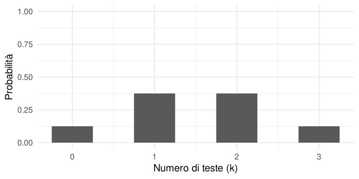
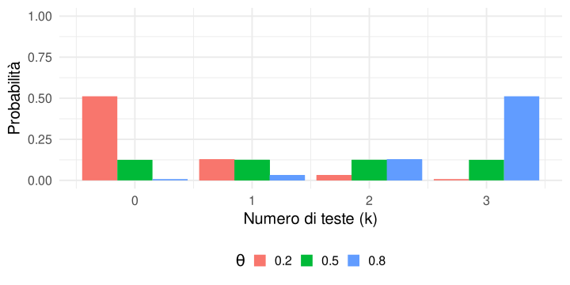
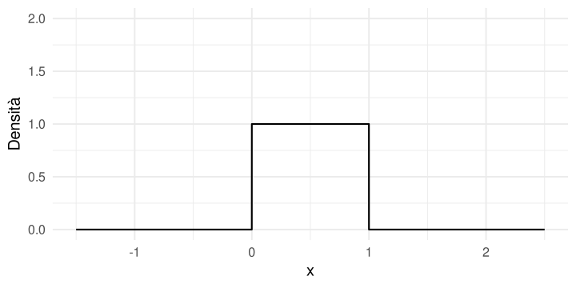
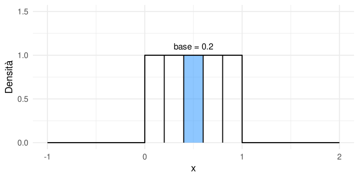
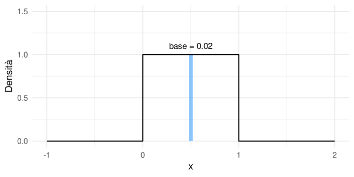
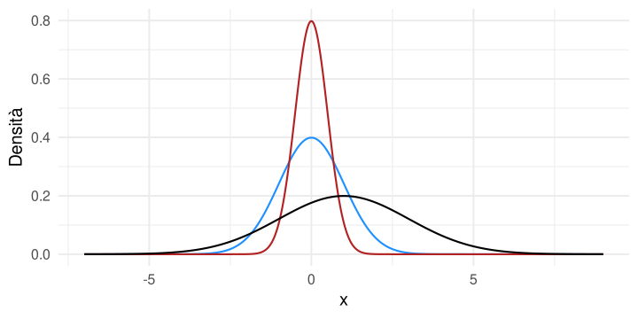
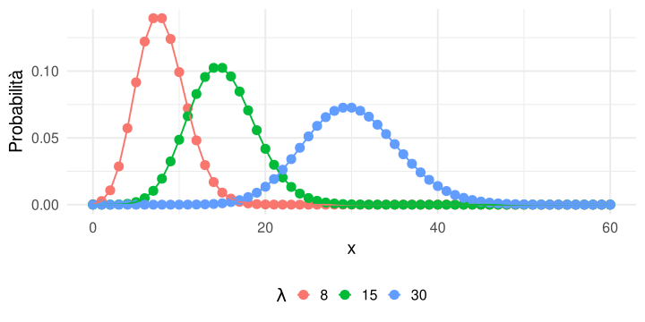
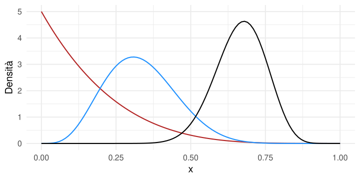

![]()
| n1 | n2 | n3 | E | k |
|---|---|---|---|---|
| ⚪ | ⚪ | ⚪ | 1 | 0 |
| ⚪ | ⚪ | 🔵 | 2 | 1 |
| ⚪ | 🔵 | ⚪ | 3 | 1 |
| ⚪ | 🔵 | 🔵 | 4 | 2 |
| 🔵 | ⚪ | ⚪ | 5 | 1 |
| 🔵 | ⚪ | 🔵 | 6 | 2 |
| 🔵 | 🔵 | ⚪ | 7 | 2 |
| 🔵 | 🔵 | 🔵 | 8 | 3 |
Probabilità e distribuzioni di probabilità
ADCOM 2025-2026
Ultimo aggiornamento: 04-01-2026
Riferimenti
Un’ottima introduzione a questi temi si può trovare in:
Kruschke, J. K. (2015). Doing Bayesian Data Analysis. https://doi.org/10.1016/c2012-0-00477-2
Kruschke (2015)
Obiettivo
Introdurre quattro idee fondamentali:
- che cos’è una distribuzione di probabilità
- che cosa significa assegnare probabilità a valori possibili
- la differenza tra variabili discrete e continue
- qualche esempio di distribuzione di probabilità (Normale e Binomiale)
Distribuzione di probabilità
Una distribuzione di probabilità è un modo per descrivere:
- quali valori sono possibili
- quanto è plausibile ciascun valore
In altre parole, una distribuzione ci dice come si distribuisce la probabilità sui possibili risultati.
Esempio: lancio di una moneta
Consideriamo un singolo lancio di una moneta.
I possibili risultati sono due:
- testa 🔵
- croce ⚪
Questo è un esempio di fenomeno casuale: prima del lancio non sappiamo quale risultato osserveremo.
Spazio campionario
L’insieme di tutti i risultati possibili si chiama spazio campionario \(S\).
Nel caso di un singolo lancio:
\[ S = \{\text{testa}, \text{croce}\} \]
Gli esiti devono essere:
- mutuamente esclusivi: in un singolo lancio non può uscire sia testa sia croce
- esaustivi: testa o croce coprono tutti i possibili risultati
Frequenza relativa e probabilità
Se lanciamo la moneta molte volte, possiamo contare quante volte esce testa. Se il numero di teste è \(k\) su \(n\) lanci, allora
\[ \frac{k}{n} \]
è la frequenza relativa di testa. Quando il numero di lanci è molto grande, la frequenza relativa tende a stabilizzarsi attorno alla probabilità dell’evento.
Tre lanci di moneta
Ora immaginiamo di lanciare una moneta 3 volte.
In questo caso gli esiti elementari possibili sono:
Abbiamo:
\[ 2^3 = 8 \]
sequenze possibili.
Qui l’ordine conta: ad esempio 🔵⚪🔵 e ⚪🔵🔵 sono due esiti diversi.
Tre lanci di moneta
Con tre lanci possiamo fare due domande diverse.
- Quale sequenza è uscita?: possiamo quindi ottenere una delle 8 sequenze presentate in precedenza.
- Quante teste sono uscite?: possiamo contare il numero di teste \(k\) in ogni sequenza.
In questo secondo caso abbiamo:
\[ k = \{0, 1, 2, 3\} \]
Esiti, eventi e variabile casuale
Distinguiamo tre idee:
- esito: un risultato specifico, ad esempio 🔵⚪🔵
- evento: un insieme di esiti, ad esempio “ottenere esattamente 2 teste”
- variabile casuale: una regola che assegna un numero a ogni esito
Definiamo allora la variabile casuale:
\[ K = \text{numero di teste in 3 lanci} \]
La variabile casuale \(K\)
Se definiamo
\[ K = \text{numero di teste} \]
allora i possibili valori di \(K\) sono:
\[ \{0,1,2,3\} \]
Quindi:
- lo spazio campionario dei tre lanci contiene 8 sequenze
- la variabile casuale \(K\) riassume queste 8 sequenze in 4 possibili valori
Un esempio concreto
L’evento “ottenere esattamente 2 teste” corrisponde a tre esiti:
- 🔵🔵⚪
- 🔵⚪🔵
- ⚪🔵🔵
Quindi un evento può contenere più esiti elementari.
Se la moneta è equa
Se assumiamo che la moneta sia equa, allora:
\[ p(\text{testa}) = 0.5 \qquad p(\text{croce}) = 0.5 \]
Ogni sequenza di tre lanci ha probabilità:
\[ 0.5^3 = 0.125 \]
Per esempio:
- \(p(\text{🔵🔵⚪}) = 0.125\)
- \(p(\text{⚪⚪⚪}) = 0.125\)
Introduciamo un parametro: \(\theta\)
In generale possiamo chiamare
\[ \theta = p(\text{testa}) \]
Allora:
\[ p(\text{croce}) = 1 - \theta \]
Se \(\theta = 0.5\), la moneta è equa.
Se \(\theta \neq 0.5\), la moneta è sbilanciata.
Probabilità di una sequenza
Supponiamo di voler calcolare la probabilità della sequenza:
🔵🔵⚪
Se i lanci sono indipendenti, moltiplichiamo le probabilità dei singoli lanci:
\[ \theta \times \theta \times (1 - \theta) \]
cioè:
\[ \theta^2 (1-\theta) \]
Più in generale, una sequenza con \(k\) teste e \(n-k\) croci ha probabilità:
\[ \theta^k (1-\theta)^{n-k} \]
Probabilità di una sequenza
Di solito non ci interessa una sequenza specifica ma qualcosa come:
Qual è la probabilità di ottenere 2 teste su 3 lanci?
Essendo che non ci interessa la sequenza specifica, ci sono più modi di ottenere \(k = 2\) teste.
Quante sequenze danno 2 teste?
Con 3 lanci, “2 teste” può essere ottenuto in 3 modi:
- 🔵🔵⚪
- 🔵⚪🔵
- ⚪🔵🔵
Quindi:
\[ p(k=2) = 3 \times \theta^2 (1-\theta) \]
Se \(\theta = 0.5\):
\[ p(k=2) = 3 \times 0.5^3 = 0.375 \]
Il coefficiente binomiale
In generale, il numero di modi in cui possiamo ottenere \(k\) successi in \(n\) prove è dato dal coefficiente binomiale:
\[ {n \choose k} = \frac{n!}{k!(n-k)!} \]
La formula di per se non è rilevante, serve solo capire che ci permette di contare le volte in cui otteniamo \(k\) successi in \(n\) lanci. Ovvero quante sequenze diverse producono lo stesso numero di successi.
La distribuzione Binomiale
Mettendo insieme i due pezzi:
- probabilità di una singola sequenza con \(k\) successi
- numero di sequenze che producono quei \(k\) successi
otteniamo:
\[ p(k \mid \theta, n) = {n \choose k}\theta^k(1-\theta)^{n-k} \]
Questa è la distribuzione Binomiale.
Che cosa descrive la Binomiale?
La distribuzione Binomiale descrive la probabilità di ottenere:
\[ k = 0,1,2,\dots,n \]
successi in \(n\) prove, quando:
- ogni prova ha due possibili esiti
- la probabilità di successo è sempre la stessa
- le prove sono indipendenti
Esempio con \(n=3\) e \(\theta=0.5\)

Come leggere questo grafico
Questo grafico ci dice quanto è probabile osservare:
- 0 teste
- 1 testa
- 2 teste
- 3 teste
La somma di tutte queste probabilità è sempre uguale a 1 perchè una delle quattro possibilità deve necessariamente verificarsi.
Se cambia \(\theta\), cambia la distribuzione
| n1 | n2 | n3 | E | k | theta 0.2 | theta 0.5 | theta 0.8 |
|---|---|---|---|---|---|---|---|
| ⚪ | ⚪ | ⚪ | 1 | 0 | 0.512 | 0.125 | 0.008 |
| ⚪ | ⚪ | 🔵 | 2 | 1 | 0.128 | 0.125 | 0.032 |
| ⚪ | 🔵 | ⚪ | 3 | 1 | 0.128 | 0.125 | 0.032 |
| ⚪ | 🔵 | 🔵 | 4 | 2 | 0.032 | 0.125 | 0.128 |
| 🔵 | ⚪ | ⚪ | 5 | 1 | 0.128 | 0.125 | 0.032 |
| 🔵 | ⚪ | 🔵 | 6 | 2 | 0.032 | 0.125 | 0.128 |
| 🔵 | 🔵 | ⚪ | 7 | 2 | 0.032 | 0.125 | 0.128 |
| 🔵 | 🔵 | 🔵 | 8 | 3 | 0.008 | 0.125 | 0.512 |
Stessa idea, distribuzioni diverse

Che cos’è, allora, una distribuzione?
In questo esempio, la distribuzione è una funzione che assegna una probabilità a ciascun valore possibile di \(K\).
In simboli:
\[ p(k \mid \theta, n) \]
Questa funzione dipende dai parametri:
- \(n\): numero di prove
- \(\theta\): probabilità di successo
Se cambiano i parametri, cambia la forma della distribuzione.
Variabili discrete
La Binomiale è un esempio di distribuzione per una variabile discreta.
Una variabile è discreta quando può assumere valori separati e numerabili, ad esempio:
- numero di errori
- numero di risposte corrette
- numero di sintomi
- numero di successi in un compito
Funzione di massa di probabilità
Nel caso discreto, la funzione assegna una probabilità a ogni valore possibile.
Per questo si parla di: funzione di massa di probabilità (PMF, Probability Mass Function)
Per una variabile discreta:
- \(p(x) \ge 0\)
- ogni valore ha una probabilità
- la somma totale delle probabilità è 1
Variabili continue
Altre variabili invece sono continue.
Esempi tipici in psicologia:
- tempo di reazione
- tempo trascorso
- intensità di una risposta fisiologica
- punteggi misurati su una scala continua
Qui i valori possibili non sono solo 0,1,2,… ma un insieme continuo di numeri.
Un punto fondamentale
Nel caso discreto possiamo chiedere:
qual è la probabilità di osservare esattamente \(x\)?
Nel caso continuo, invece, la probabilità di un singolo valore è:
\[ p(x)=0 \]
Nel continuo ha senso parlare della probabilità di un intervallo di valori.
Un esempio semplice
Immaginiamo una variabile continua distribuita uniformemente tra 0 e 1.

Un esempio semplice
Immaginiamo ora di creare un rettangolo di base \(b = 0.2\), l’area in questo caso sarebbe \(0.2 \times 1 = 0.2\). Se sommiamo tutti questi rettangoli abbiamo 1 ovviamente.

Un esempio semplice
Ora proviamo a ridurre la base ancora. L’area ora è \(0.02 \times 1 = 0.02\). Ma la somma di tutti i rettangoli è sempre 1.

Probabilità e area
Nel caso continuo, l’altezza della curva non è una probabilità ma viene chiamata densità. La probabilità si ottiene invece come area sotto la curva.
Per esempio, la probabilità che \(x\) cada in un certo intervallo corrisponde all’area della regione sotto la curva in quell’intervallo.
\(p(x)\) = 0
Se restringiamo l’intervallo sempre di più, l’area diventa sempre più piccola.
Nel limite di un singolo punto, l’area diventa 0.
Quindi, per variabili continue:
- la probabilità di un singolo valore è 0
- la probabilità riguarda intervalli
- la densità può anche essere maggiore di 1
- l’area totale sotto la curva resta sempre 1
Funzione di densità
Nel caso continuo si parla di funzione di densità di probabilità (PDF, Probability Density Function). La probabilità è definita nell’intervallo compreso tra due valori \(a\) e \(b\) è:
\[ p(a \le x \le b) = \int_a^b f(x)\,dx \]
e l’area totale sotto la curva è:
\[ \int_{-\infty}^{+\infty} f(x)\,dx = 1 \]
Distribuzione Normale
Un esempio classico è quello della distribuzione Normale che è determinata da due parametri:
- \(\mu\): la media, cioè il centro della distribuzione
- \(\sigma\): la deviazione standard, cioè quanto la distribuzione è larga o stretta
Non è importante memorizzare la formula.
È importante capire come questi parametri cambiano la forma della curva.
Formula della Normale
\[ f(x \mid \mu, \sigma) = \frac{1}{\sigma\sqrt{2\pi}} e^{-\frac{(x-\mu)^2}{2\sigma^2}} \]
Anche qui, il valore della funzione è una densità, non una probabilità puntuale.
Come cambia la Normale

Un punto importante sulla densità
Una curva più alta non significa e quindi con densità maggiore non significa una maggiore probabilità.
La stessa area totale (totale = 1) è concentrata in una regione più piccola.
Per questo una densità può anche essere maggiore di 1 mentre l’area sotto la curva è sempre 1.
Confronto finale: discreto vs continuo
| Tipo di variabile | Esempio | Funzione | Interpretazione |
|---|---|---|---|
| Discreta | numero di errori, numero di successi | \(p(x)\) | probabilità del singolo valore |
| Continua | tempo di reazione, misure continue | \(f(x)\) | densità; la probabilità è l’area su un intervallo |
Qualche altro esempio, Poisson [#extra]
La distribuzione di Poisson descrive la probabilità (PMF) per eventi discreti. Si usa per contare il numero di eventi in un certo lasso di tempo. Lo spazio campionario è \(\{0, 1, 2, \dots \}\):
\[ f(x \mid \lambda) = p(x \mid \lambda) = \frac{\lambda^x e^{-\lambda}}{x!} \]
La formula è nuova (non la vedremo) ma la logica è la stessa. Per ogni possibile esito discreto \(x\), la funzione assegna una probabilità in funzione dell’unico parametro \(\lambda\).
Qualche altro esempio, Poisson [#extra]

Qualche altro esempio, Beta [#extra]
La distribuzione Beta è una distribuzione di probabilità continua ma compresa tra 0 e 1.
\[ f(x \mid \alpha, \beta) = \frac{x^{\alpha-1}(1-x)^{\beta-1}}{B(\alpha, \beta)} \]
Qualche altro esempio, Beta [#extra]

Bibliografia
Kruschke, J. K. (2015). Doing Bayesian Data Analysis. https://doi.org/10.1016/c2012-0-00477-2